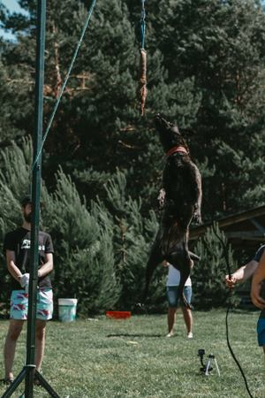

Jėgos sporto rungtys
Wall Climbing – lipimas į sieną
Įsibėgėjęs šuo kuo aukščiau turi įlipti siena ir įsikąsti į pakabintą žaislą. Paprastai tai būna speciali džiutinė pelė. Siena – status paviršius, padengtas neslidžia medžiaga (kilimas, guma ir pan.). Šunys tokiose sienose įveikia labai didelius aukščius – net iki 3,7 m, tad nesėkmingų lipimų atvejais gyvūną, kad tas nesusižeistų, būtina gaudyti.
High Jump – šuolis į aukštį
Rungties metu šuo turi pašokti ir įsikabinti į pakabintą jauką (dresūros pelę, kai kur naudojama padanga). Treniruočių metu žaislą geriausia tvirtinti taip, kad jis šiek tiek spyruokliuotų – prie lankstesnės šakos, tvirtos gumos ar spyruoklės… Iš inercijos ir dėl gravitacijos skeletui gaunasi nemaža apkrova – tad geriau šunį treniruočių metu patausoti.
Weight pulling – svorio tempimas
Oficialiai šis sportas vyksta nuo 1970 metų ir vis labiau populiarėja. Jame svarbu ne tik fizinė jėga – didžiausius svorius tempia psichologiškai tvirčiausi šunys. Ruošiant šunį šiai rungčiai svarbu tai, kad jo neįmanoma priversti tempti. Tai gyvūnas turi daryti savo noru.
Tempimo rūšių yra įvairių, kai kurie šeimininkai šunis moko dirbti su visomis, tačiau paprastai kuriai nors teikia pirmenybę. Šuo kinkomas į roges ar vežimėlį, prižiūrėtojas duoda komandą. Krovinys 60 – 90 s velkamas 5 – 6 m. Šuns tuo metu liesti negalima. Daugelyje varžybų jaukas (maistas, skanėstai, žaislai) nenaudojamas, o šiurkštus elgesys su gyvūnu gresia diskvalifikacija. Taip pat draudžiama viskas, kas šuniui gali kelti grėsmę. Gera šuns priežiūra ir pagarba – būtina tempimo varžybų sąlyga.P>
Jei tampa aišku, kad šuniui parinktas svoris per sunkus, jam padedama. Jis neturi žinoti pralaimėjimo jausmo. Nugalėtojas renkamas skaičiuojant koeficientą – ištempto svorio ir šuns kūno svorio santykį. Taip pat prizą gauną didžiausią svorį (Most) nutempęs šuo.
Long Jump – šuolis į tolį
Po komandos ar viliojamas žaisliuku įsibėgęs šuo turi peršokti kliūtį. Kuo didesnį atstumą jis nušoka – tuo geriau. Šioje rungtyje dalyvauja tik gerai valdomi šunys, kadangi paprastai jie būna palaidi.

Weight Pull Sprint – triračio tempimas
Skatinamas žaisliuku šuo kuo greičiau turi nutempti triratį su jame esančiu žmogumi. Šioje rungtyje, kad dalyvavimas būtų sąžiningas (tempiamas svoris visiems šunimis – ir mažiems, ir dideliems – vienodas) paprastai skiriamos bent 2 – 3 svorio grupės.

Weight Pull Drag – rogučių tempimas
Skatinamas žaisliuku šuo turi kuo greičiau nutempti rogutes, kurių svoris paprastai būna lygus jo svoriui.
Tug of War – virvės traukimas
Dalyvauja šunys nuo 12 mėnesių amžiaus. Esant bent dviem panašaus svorio šunims vyresniems kaip 9 mėnesių amžiaus, dalyvauti gali ir jie. Priešininkai skiriami atsižvelgiant į kūno masę. Jei dalyvių daug, skiriamos trys šunų klasės – iki 22 kg, 22 – 25 kg, 25+ kg. Jų atstovai tarpusavyje traukia burtus.
Šunys pririšami trumpais pavadžiais (už antkaklių) taip, kad negalėtų pasiekti vienas kito. Pririštiems šunims duodama įsikąsti virvę. Jei šeimininkus tenkina tai, kaip jie įsikando, pradedamas skaičiuoti laikas. Tempimo metu šalia šuns gali būti tik vienas asmuo. Tempimo metu draudžiama liesti šunis. Nuo tempimo pradžios praėjus 30 min. hendleriai privalo atsitraukti nuo šunų.
Laimi šuo, priešininkui iš nasrų ištraukęs virvę. Jei priešininkas virvę paleidžia, tačiau kitas šuo jos neištraukia ir priešininkas vėl spėja ją pagriebti, tai nelaikoma laimėjimu ir rungtis tęsiasi toliau.
Puppy Race – mažylių lenktynės
Dalyvauja iki 7 mėnesių amžiaus ir 7 – 12 mėnesių amžiaus šuniukai. Klasės neskirstomos pagal lytį. Šuniukai iki 6 mėnesių amžiaus turi kuo greičiau nubėgti nustatytą atstumą. Laikas pradedamas skaičiuoti, kai šuniuko krūtinė kerta starto liniją, baigiamas, kai kerta finišo liniją.
Vyresni kaip 7 mėnesių amžiaus šuniukai bėga su specialiomis Weight Pulling`o petnešomis. Šuniukui kabinamas svoris, sudarantis 30 proc. jo kūno svorio.
Kiekvienas šunytis turi du bandymus. Jei tempimo metu šunytis pačiumpa žaislą ar yra paliečiamas, tempimas neužskaitomas, jo negalima kartoti iš naujo. Jei kiekvienoje klasėje nesusirenka bent po 3 šuniukus, jos jungiamos į vieną, kuriai galioja šunyčių iki 7 mėn. amžiaus taisyklės.